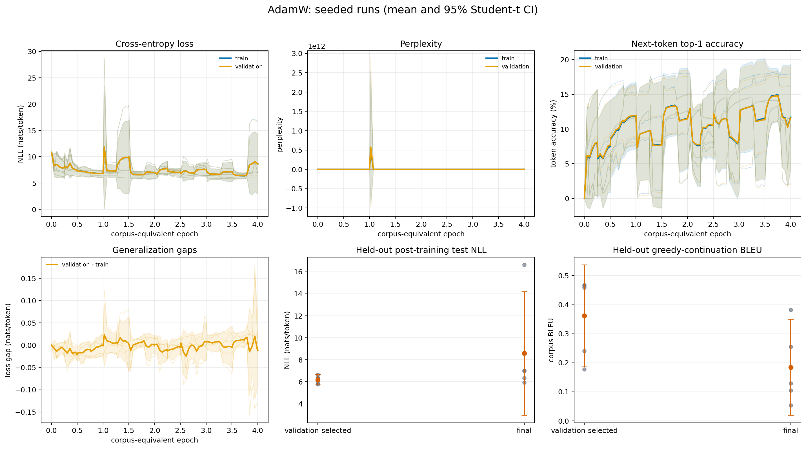
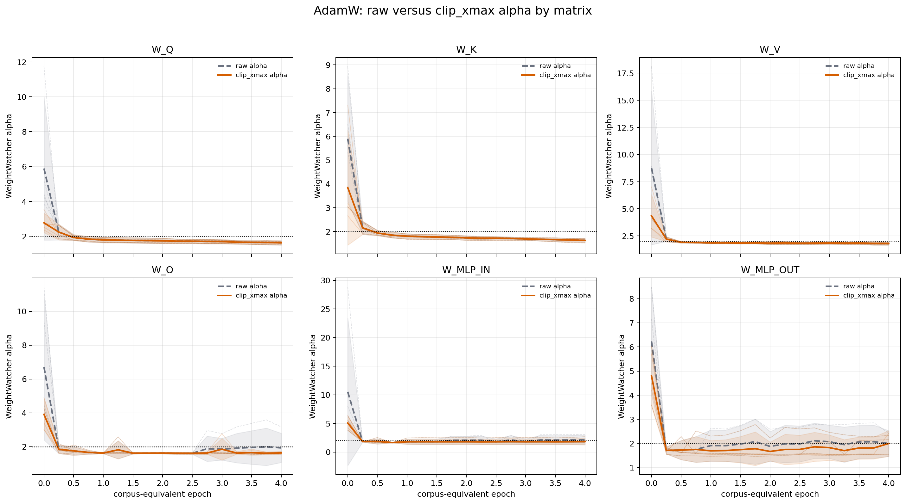
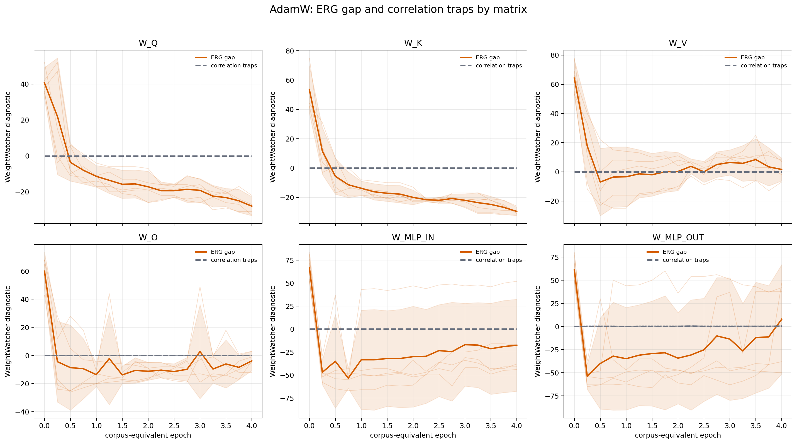
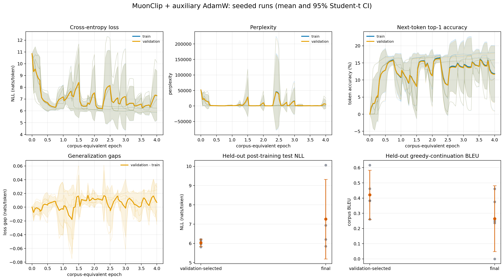
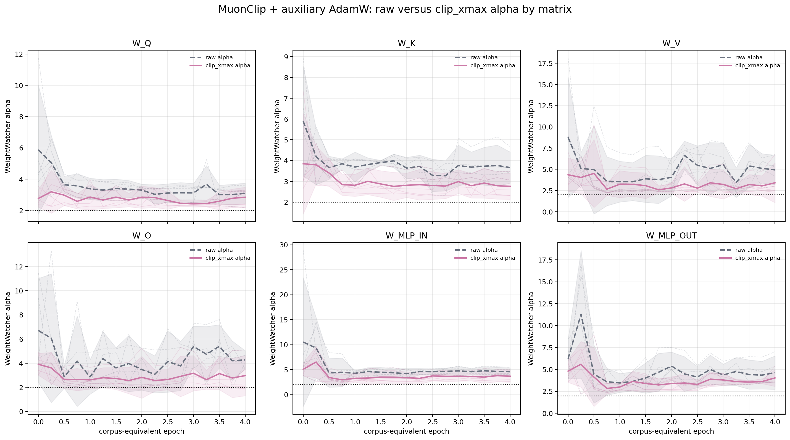
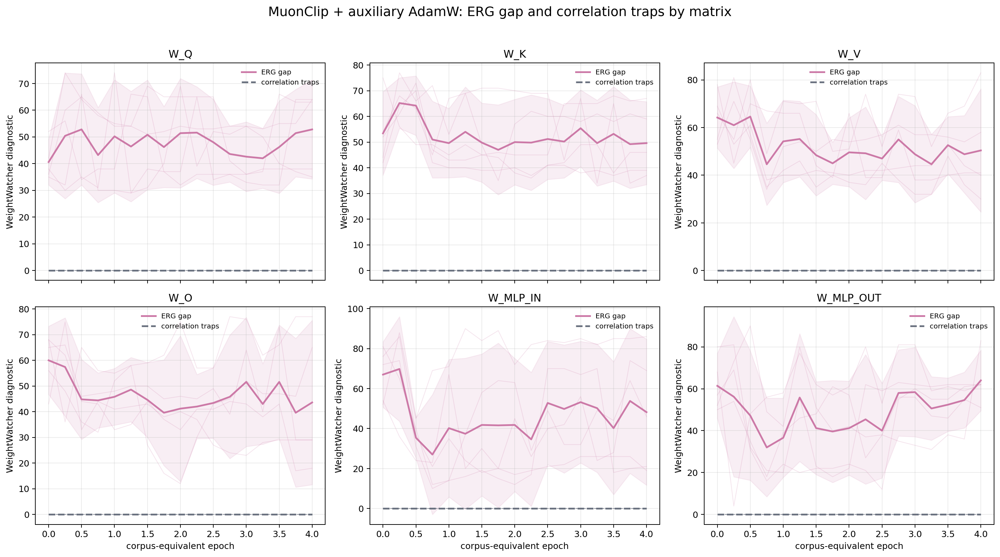

Exact campaign: AdamW and MuonClip; seeds 1337, 2027, 4099, 31415, and 271828. The run is the replicate. Test quantities never enter the saturation calculation. A 95% interval with n=5 uses Student-t critical value 2.77645.
| optimizer | seed | complete | optimizer_steps | train_epochs | best_validation_loss | final_test_loss | accelerator | torch_version | git_commit |
|---|---|---|---|---|---|---|---|---|---|
| adamw | 1337 | True | 39063 | 4.00005 | 6.39583 | 7.01695 | mps | 2.9.1 | 54419d969ad17afaa5c983e0b8a5443b83dfef98 |
| adamw | 2027 | True | 39063 | 4.00005 | 5.89142 | 5.93026 | mps | 2.9.1 | 54419d969ad17afaa5c983e0b8a5443b83dfef98 |
| adamw | 4099 | True | 39063 | 4.00005 | 6.36731 | 16.63604 | mps | 2.9.1 | 54419d969ad17afaa5c983e0b8a5443b83dfef98 |
| adamw | 31415 | True | 39063 | 4.00005 | 5.81971 | 6.34314 | mps | 2.9.1 | 54419d969ad17afaa5c983e0b8a5443b83dfef98 |
| adamw | 271828 | True | 39063 | 4.00005 | 6.67032 | 7.01902 | mps | 2.9.1 | 54419d969ad17afaa5c983e0b8a5443b83dfef98 |
| muon_clip | 1337 | True | 39063 | 4.00005 | 6.05294 | 6.93159 | mps | 2.9.1 | 54419d969ad17afaa5c983e0b8a5443b83dfef98 |
| muon_clip | 2027 | True | 39063 | 4.00005 | 5.85370 | 5.84801 | mps | 2.9.1 | 54419d969ad17afaa5c983e0b8a5443b83dfef98 |
| muon_clip | 4099 | True | 39063 | 4.00005 | 5.99140 | 7.25584 | mps | 2.9.1 | 54419d969ad17afaa5c983e0b8a5443b83dfef98 |
| muon_clip | 31415 | True | 39063 | 4.00005 | 6.16925 | 10.06358 | mps | 2.9.1 | 54419d969ad17afaa5c983e0b8a5443b83dfef98 |
| muon_clip | 271828 | True | 39063 | 4.00005 | 6.22522 | 6.20787 | mps | 2.9.1 | 54419d969ad17afaa5c983e0b8a5443b83dfef98 |
Accuracy is next-token top-1 accuracy on a fixed held-out probe, not a classification or sequence-level accuracy. Top-5 accuracy is separate. Perplexity is exp(mean token NLL), and bits/token is NLL/log(2). BLEU is a secondary fixed greedy held-out continuation diagnostic—not translation BLEU—and is accompanied by continuation token accuracy and exact match.
| optimizer | checkpoint | metric | n | mean | sd | ci95_low | ci95_high |
|---|---|---|---|---|---|---|---|
| adamw | final | test_loss | 5 | 8.58908 | 4.52227 | 2.97394 | 14.20422 |
| adamw | final | test_perplexity | 5 | 3.358e+06 | 7.506e+06 | -5.963e+06 | 1.268e+07 |
| adamw | final | test_bits_per_token | 5 | 12.39143 | 6.52426 | 4.29049 | 20.49236 |
| adamw | final | test_accuracy | 5 | 0.11591 | 0.06100 | 0.04017 | 0.19165 |
| adamw | final | test_top5_accuracy | 5 | 0.23844 | 0.10930 | 0.10273 | 0.37415 |
| adamw | final | test_bleu | 5 | 0.18454 | 0.13298 | 0.01943 | 0.34965 |
| adamw | final | test_continuation_token_accuracy | 5 | 0.02510 | 0.00666 | 0.01682 | 0.03337 |
| adamw | final | test_continuation_exact_match | 5 | 0.00000 | 0.00000 | 0.00000 | 0.00000 |
| adamw | validation_selected | test_loss | 5 | 6.20400 | 0.37294 | 5.74093 | 6.66707 |
| adamw | validation_selected | test_perplexity | 5 | 522.29780 | 187.54543 | 289.42938 | 755.16621 |
| adamw | validation_selected | test_bits_per_token | 5 | 8.95049 | 0.53804 | 8.28242 | 9.61856 |
| adamw | validation_selected | test_accuracy | 5 | 0.15501 | 0.02432 | 0.12481 | 0.18520 |
| adamw | validation_selected | test_top5_accuracy | 5 | 0.30306 | 0.03658 | 0.25764 | 0.34848 |
| adamw | validation_selected | test_bleu | 5 | 0.36203 | 0.14138 | 0.18648 | 0.53757 |
| adamw | validation_selected | test_continuation_token_accuracy | 5 | 0.01982 | 0.00246 | 0.01677 | 0.02287 |
| adamw | validation_selected | test_continuation_exact_match | 5 | 0.00000 | 0.00000 | 0.00000 | 0.00000 |
| muon_clip | final | test_loss | 5 | 7.26138 | 1.66348 | 5.19590 | 9.32686 |
| muon_clip | final | test_perplexity | 5 | 5351 | 1.014e+04 | -7238 | 1.794e+04 |
| muon_clip | final | test_bits_per_token | 5 | 10.47596 | 2.39989 | 7.49610 | 13.45582 |
| muon_clip | final | test_accuracy | 5 | 0.11743 | 0.06626 | 0.03517 | 0.19970 |
| muon_clip | final | test_top5_accuracy | 5 | 0.23661 | 0.12378 | 0.08291 | 0.39030 |
| muon_clip | final | test_bleu | 5 | 0.26458 | 0.17452 | 0.04789 | 0.48126 |
| muon_clip | final | test_continuation_token_accuracy | 5 | 0.01914 | 0.01178 | 0.00451 | 0.03377 |
| muon_clip | final | test_continuation_exact_match | 5 | 0.00000 | 0.00000 | 0.00000 | 0.00000 |
| muon_clip | validation_selected | test_loss | 5 | 6.02950 | 0.15409 | 5.83816 | 6.22083 |
| muon_clip | validation_selected | test_perplexity | 5 | 419.41701 | 63.37973 | 340.72068 | 498.11335 |
| muon_clip | validation_selected | test_bits_per_token | 5 | 8.69872 | 0.22231 | 8.42269 | 8.97476 |
| muon_clip | validation_selected | test_accuracy | 5 | 0.16896 | 0.00885 | 0.15797 | 0.17995 |
| muon_clip | validation_selected | test_top5_accuracy | 5 | 0.32617 | 0.01344 | 0.30949 | 0.34286 |
| muon_clip | validation_selected | test_bleu | 5 | 0.42092 | 0.13115 | 0.25807 | 0.58376 |
| muon_clip | validation_selected | test_continuation_token_accuracy | 5 | 0.02002 | 0.00401 | 0.01504 | 0.02500 |
| muon_clip | validation_selected | test_continuation_exact_match | 5 | 0.00000 | 0.00000 | 0.00000 | 0.00000 |
Every difference is optimizer_b - optimizer_a. Positive and negative values must be interpreted according to whether higher or lower is preferable for the metric.
| checkpoint | metric | contrast | n | mean | sd | ci95_low | ci95_high | valid_exact_n5 |
|---|---|---|---|---|---|---|---|---|
| final | test_accuracy | muon_clip minus adamw | 5 | 0.00153 | 0.09016 | -0.11042 | 0.11348 | True |
| final | test_loss | muon_clip minus adamw | 5 | -1.32770 | 4.83962 | -7.33689 | 4.68148 | True |
| validation_selected | test_accuracy | muon_clip minus adamw | 5 | 0.01395 | 0.02164 | -0.01291 | 0.04082 | True |
| validation_selected | test_loss | muon_clip minus adamw | 5 | -0.17451 | 0.34166 | -0.59874 | 0.24972 | True |
Plateau means |one-epoch validation-NLL improvement| ≤ 0.010 nat/token for two consecutive intervals. Runs are not stopped by this diagnostic.
| optimizer | seed | plateau_detected | plateau_assessment_end_epoch | degradation_detected | first_degradation_end_epoch | best_validation_epoch | best_validation_loss | final_validation_loss | test_metrics_used |
|---|---|---|---|---|---|---|---|---|---|
| adamw | 1337 | False | False | 2.74995 | 6.39583 | 7.04255 | False | ||
| adamw | 2027 | False | False | 1.75002 | 5.89142 | 5.96488 | False | ||
| adamw | 4099 | False | False | 3.24997 | 6.36731 | 16.62434 | False | ||
| adamw | 31415 | False | True | 3.00000 | 3.74999 | 5.81971 | 6.36395 | False | |
| adamw | 271828 | False | True | 3.00000 | 1.25000 | 6.70168 | 7.05252 | False | |
| muon_clip | 1337 | False | True | 4.00000 | 3.24997 | 6.05294 | 6.95514 | False | |
| muon_clip | 2027 | False | False | 3.50003 | 5.85370 | 5.89004 | False | ||
| muon_clip | 4099 | False | False | 2.74995 | 5.99140 | 7.28535 | False | ||
| muon_clip | 31415 | False | False | 3.50003 | 6.16925 | 10.07311 | False | ||
| muon_clip | 271828 | False | False | 3.50003 | 6.22522 | 6.23400 | False |
The six layer values are reduced to one median inside each seeded run before any across-seed mean or confidence interval is computed.
| optimizer | epoch | metric | n | mean | sd | ci95_low | ci95_high | valid_exact_n5 |
|---|---|---|---|---|---|---|---|---|
| adamw | 4.00005 | alpha_raw_six_matrix_median | 5 | 1.74557 | 0.17481 | 1.52851 | 1.96263 | True |
| adamw | 4.00005 | alpha_clip_xmax_six_matrix_median | 5 | 1.66405 | 0.03628 | 1.61901 | 1.70910 | True |
| adamw | 4.00005 | alpha_clip_minus_raw_six_matrix_median | 5 | -0.08151 | 0.16059 | -0.28091 | 0.11788 | True |
| muon_clip | 4.00005 | alpha_raw_six_matrix_median | 5 | 3.97721 | 0.34028 | 3.55469 | 4.39972 | True |
| muon_clip | 4.00005 | alpha_clip_xmax_six_matrix_median | 5 | 2.97151 | 0.42783 | 2.44029 | 3.50272 | True |
| muon_clip | 4.00005 | alpha_clip_minus_raw_six_matrix_median | 5 | -1.00570 | 0.72123 | -1.90123 | -0.11018 | True |
| optimizer | optimizer_label | seed | diagnostic_rows | last_step | active_fraction_weighted | max_logit_observed | min_gamma_observed |
|---|---|---|---|---|---|---|---|
| muon_clip | MuonClip + auxiliary AdamW | 1337 | 79 | 3.906e+04 | 0.00000 | 11.74977 | 1.00000 |
| muon_clip | MuonClip + auxiliary AdamW | 2027 | 79 | 3.906e+04 | 0.00000 | 9.05290 | 1.00000 |
| muon_clip | MuonClip + auxiliary AdamW | 4099 | 79 | 3.906e+04 | 0.00000 | 10.37812 | 1.00000 |
| muon_clip | MuonClip + auxiliary AdamW | 31415 | 79 | 3.906e+04 | 0.00000 | 8.79687 | 1.00000 |
| muon_clip | MuonClip + auxiliary AdamW | 271828 | 79 | 3.906e+04 | 0.00000 | 4.69516 | 1.00000 |






210 checkpoint files were indexed by byte size and SHA-256. See checkpoint_sha256.csv.